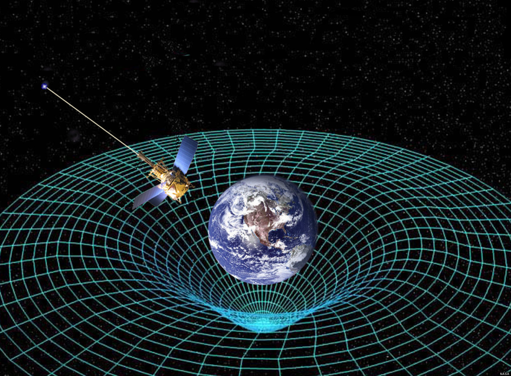

We all know that different people can perceive a situation is different ways. This concept can be applied to physics as well.
Imagine two people; one is standing on the platform of a train station and another is on a train moving past it. The stationary person sees the train rapidly moving past them, but to the person on the train, it is the person on the platform that is moving
This phenomenon is best illustrated at velocities close to the speed of light. When objects move this rapidly, some seriously weird stuff starts to happen. This is explained by relativity, a theory developed in the early twentieth century by Albert Einstein in response to the inability of Newtonian mechanics to adequately describe objects' behavior at extremely high speeds.
Einstein's Two Core Postulates
"The laws of physics are the same in all inertial frames of reference."
"The speed of light in a vacuum, c ≅ 3.00 x 108 m/s, is the same in all inertial frames of reference, regardless of the motion of the source or the observer of the light."
Equivalence of Physical Laws
Einstein’s first postulate states that inertial frames of reference (systems in which there is no acceleration and Newtonian mechanics apply) exist not only for Newton’s laws, but for all known laws of physics.
Imagine you roll a cannonball and a marble across a horizontal surface on Earth. If they have the same initial velocity, the two objects will roll at exactly the same rate. Now imagine you take the same objects and fly to a planet on the other side of the galaxy. As long as both experiments are performed within internal frames of reference, the rolling objects will behave the same way.
As long as an experiment is performed within an inertial frame of reference, it can be performed anywhere in the universe with the same result.
Constancy of the Speed of Light
c ≅ 2.99792458 x 108 m / s
Even if a light source or its observer is moving, the speed of light is constant; it never changes, and no known object can exceed it.
3.00 x 108 m / s may seem unimaginably fast, but actually, the speed of light is cripplingly slow. Because of the immense size of the universe and the upper bound the speed of light sets on how fast we can move, interstellar travel is a logistic impossibility for us. Even if we could build generation starships, human society could drastically change in the thousands of years it would take us to arrive at our destination. Even within our own solar system, traveling from one celestial object to another takes a ridiculously long time.
Because it takes so long for light from distant stars to reach Earth, every time we look into the night sky, we see the stars as they were thousands of years ago. Some of those stars underwent supernova long ago, but since their light began travelling before they collapsed, our night sky is peppered with the ghosts of long dead stars.
Movement Through Time and Space
This is where the weird stuff comes in. Because nothing can exceed the speed of light, the rules of time and space must bend to accommodate objects moving close to that speed. It may sound like something out of The Time Machine, but just as movement through space is relative, so is movement through time.
Imagine riding due north on a motorcycle that can travel at 100 km / hr. All your motion is directed northward, but then, you decide to turn slightly west. Your speed is still 100 km / hr, but your velocity has changed. Because some of your motion is westward, you’re not moving north as quickly as you were before. This is analogous to movement through time and space.
When an object is at rest, all its motion is devoted to moving through time, but as soon as it gains velocity, some of its motion is occupied moving through space. Thus, a moving object cannot move through time as quickly as an object at rest. This is the basis on Einstein's theory of special relativity. In fact:
The sum of an object's motion through space and its motion through time is precisely equal to the speed of light.
Time Dilation
Though it may seem impossible, time acts more slowly on objects moving at very high speeds than it does on objects at rest. This phenomenon is called time dilation, and it can be calculated using the formula below.
Δt = Δt0 / √ 1 - (v2 / c2)
Dilated time interval = proper time / √ 1 - ((speed of clock)2 / (speed of light2))
Time dilation can be demonstrated with the use of a light clock: a clock for which one interval of time (a “tick”) is the time it takes for light to travel from its source to a mirror and be reflected back to a sensor. When the clock is at rest, this is called the proper time. In this case, the light must travel exactly twice the distance from the source to the mirror. When it is moving, however, it must travel a greater distance, thus taking a longer time.
Imagine two identical clocks, both reading exactly the same time. One is kept on Earth, while another is sent across the galaxy on a spaceship moving close to the speed of light. Though the clocks were synchronized before, the clock on the spaceship will begin to tick more slowly than the stationary one as the spaceship approaches the speed of light.
Clocks aren’t the only things affected by time dilation. Time itself slows down for objects in motion. Chemical reactions and biological processes are affected by this just as much as the light clock. Astronauts traveling on a nearly lightspeed spaceship would not notice any change, however, as even their thought processes would slow down. To them, only a few seconds would seem to pass in a hundred Earth years.
Since humans can only reach a fraction of the speed of light, the effect of time dilation on us is miniscule. An astronaut would have to travel for hundreds of years at the fastest speed attainable by modern technology for their clock to deviate even a second from the proper time.
Length Contraction
Time isn’t the only thing affected when velocity approaches the speed of light, however. At very high speeds, distances also changes. Just as time slows at velocities close to the speed of light, distance approaches zero; as velocity increases, length becomes smaller. This is illustrated in the equation below.
L = L0 √ 1 - (v2 / c2)
Contracted length = proper length x √ 1 - ((speed of object)2 / (speed of light)2)
The Equivalence of Matter and Energy
So far, we've mostly studied how time and space change at very high speeds. However, matter (that which has mass and takes up space) and energy (that which can be transferred from one object or another but can never be created or destroyed) also play a key role in relativity. At first, it seems like matter and energy are entirely different. However, Einstein’s most famous equation shows that they are equivalent.
E = mc2
Rest energy = (mass of object) x (speed of light)2
Matter and energy are different forms of the same thing.
Mass can be converted to energy by harnessing nuclear power. In a nuclear reactor, atoms (like uranium-235) fission (break apart) into two smaller nuclei (and some neutrons left over). However, the combined mass of these smaller particles is less than the original atom, so excess energy is released. This can produce an incredible amount of energy, which people can use to power entire cities.
Mass Changes With Velocity
E = mc2 gives the energy of an object at rest. However, like time and distance, mass is affected by velocity. This can be demonstrated with the equation shown below.
E = (m0c2) / √ 1 - (v2 / c2)
Relativistic energy = (rest mass) x (speed of light)2 / √ 1 - ((speed of object)2 / (speed of light)2)
Because of the immense magnitude of the speed of light, even an object with a relatively small mass will have an enormous amount of relativistic energy.
Matter and Antimatter
Interestingly, matter is not the only thing that has mass. For every particle of matter, there is a corresponding particle of antimatter. Antimatter has the same mass as matter, but the opposite charge. For example, a hydrogen atom has a nucleus with one proton and one neutron and is orbited by a single electron; an antihydrogen atom has a nucleus with one antiproton and one antineutron and is orbited by a single positron.
Antimatter can be created in particle accelerators like the Large Hadron Collider, where particles can be accelerated to speeds close to the speed of light. In fact, whole antiatoms have been created, which suggested the possibility of entire galaxies and life forms made of antimatter.
Antimatter is fascinating because of how it interacts with matter: they annihilate one another. When matter touches antimatter, both particles' mass is converted into pure energy in the form of gamma rays. This release of energy can be enormously violent; even a gram of antimatter interacting with an equal amount of matter could produce an explosion large enough to devastate an entire country.
Many works of science fiction explore the tactical implications of antimatter's destructive tendencies, but the cost of producing antimatter is so prohibitive and its nature so dangerous that no real army has yet created an antimatter weapon.
General Relativity
So far, everything we've learned has had to do with special relativity: Einstein's theories applied to frames of reference that are not accelerating. General relativity, however, deals with acceleration, and thus, with gravity.
Imagine standing in an elevator in deep space. As long as the elevator is at rest or moving with a constant velocity, objects within it will behave as if they're weightless. As soon as the elevator begins accelerating, however, anyone standing in the elevator will feel a sensation indistinguishable from gravity.
Gravity Affects Spacetime
Before Einstein published his theories, space and time were conventionally regarded as entirely separate. Space was thought to exist in three dimensions (length, breadth, and width), while time inhabited a fourth dimension. Because space and time are so intertwined, however, the two can combined into a single continuum called spacetime.
Just as objects with significant gravitational fields draw smaller objects towards them, gravity affects spacetime. Imagine spacetime as an infinitely large sheet of rubber marked with a grid pattern. When there is no mass present, the fabric of spacetime is flat and the pattern unchanged. However, as soon as mass is added, the rubber stretches and the pattern is distorted.
 It is important to realize that it is the gravitational field the mass generates more than the mass itself that warps spacetime in this way.
Gravity Affects Light
When there is no acceleration, light travels in a straight line, directly from its source. However, gravity bends the path of light just as it bends spacetime. In fact, light's path around very massive objects can be seen to be parabolic.
Some of the first experiments validating relativity were based on comparing images of the same stars, one set taken during a solar eclipse and another when the Sun was on the other side of the Earth. By analyzing the pictures, it became clear that the stars appeared to be in different positions because of the way the Sun's gravity bent their light.
When a star consumes all its nuclear energy, it undergoes a supernova and collapses into a relatively small, very massive object. When this object's gravitational field is so strong that light cannot escape it, it is called a black hole. Black holes cannot be directly observed, but their existence is measurable by how they distort the images of surrounding celestial objects. Because of their enormous gravity, it is thought that black holes exist at the center of many galaxies, including ours. It’s best never to venture near a black hole, though; their gravity is so strong that it rips objects apart in a process called spaghettification (seriously).
Causality
Relativity raises many philisophical dilemnas about the nature of existence. For example, if the universe has no objectively "correct" chronology, do we control our own destiny? If all moments of time exist simultaneously, do we have free will? We're used to thinking of time as catalyzing the progression of events, but in reality, it does not. Rather, causality is what links everything together.
That is, If Event B follows Event A, it doesn't do so because Event A comes first chronologically--there is no objective timeline along which it can follow. Rather, Event A causes Event B to occur. It is causality that links the two, not proximity in time.
So What?
Relativity affects everything in the universe, from apples falling from trees to the ceaseless wandering of distant galaxies. Its interdisciplinary applications in fields as diverse as mathematics and philosophy raise existential questions that force us to reassess not only the nature of humanity, but the nature of the universe as a whole. Alongside quantum mechanics, relativity is a pillar of modern physics; the more we study it, the more it pushes the boundaries of human reasoning, and the closer we get to understanding our whimsical, wonderful, fantastical universe.